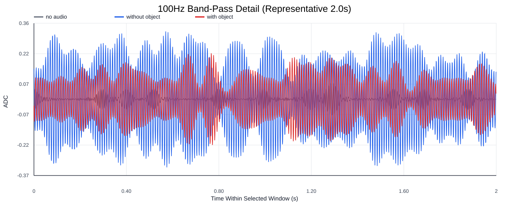
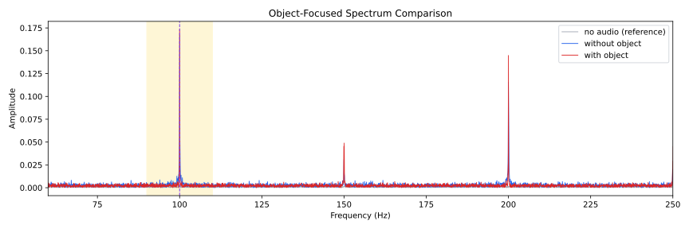
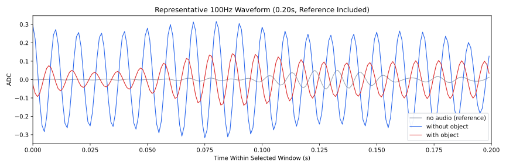
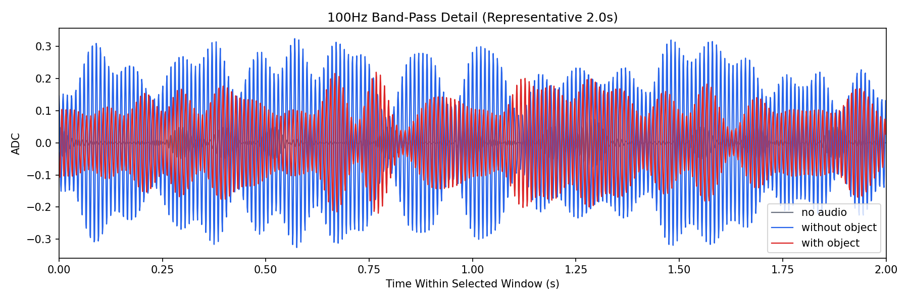
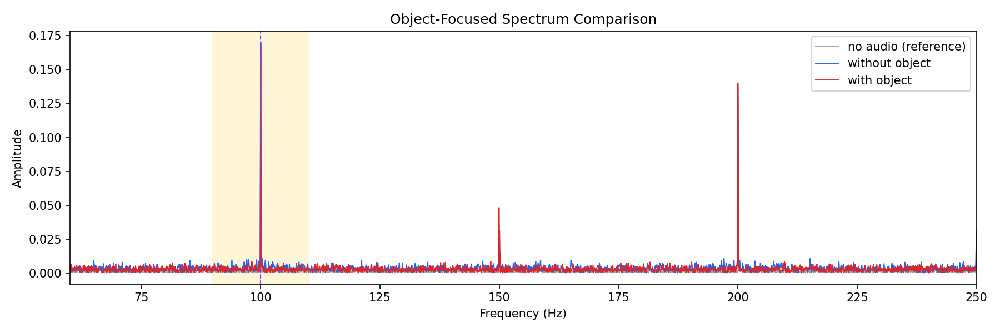
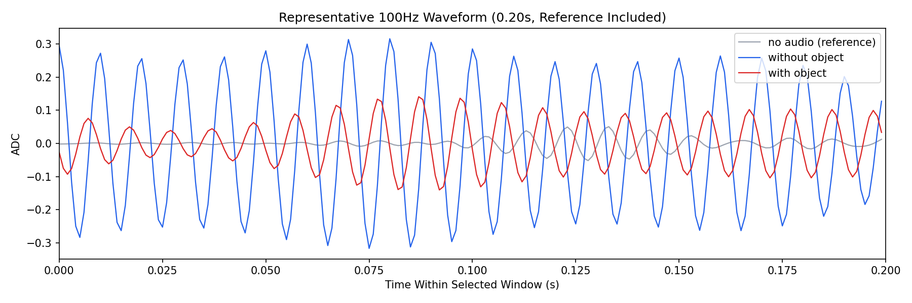

Background: F:\项目类文件夹\异物检测4.10\Data_Dual\frequency_sweep\0100Hz\repeat_05\raw\no_audio.csv
Without object: F:\项目类文件夹\异物检测4.10\Data_Dual\frequency_sweep\0100Hz\repeat_05\raw\without_object.csv
With object: F:\项目类文件夹\异物检测4.10\Data_Dual\frequency_sweep\0100Hz\repeat_05\raw\with_object.csv
| Metric | 无音频 | 100Hz无异物 | 100Hz有异物 | 无异物/无音频 | 有异物/无异物 | 有异物/无音频 |
|---|---|---|---|---|---|---|
| centered_rms | 0.074452 | 0.307256 | 0.294956 | 4.1269 | 0.9600 | 3.9617 |
| raw_target_amp | 0.004992 | 0.169880 | 0.166385 | 34.0283 | 0.9794 | 33.3282 |
| filtered_rms | 0.016737 | 0.143694 | 0.132935 | 8.5854 | 0.9251 | 7.9425 |
| filtered_target_amp | 0.004992 | 0.169880 | 0.166385 | 34.0283 | 0.9794 | 33.3282 |
| filtered_energy_ratio | 0.050537 | 0.218715 | 0.203125 | 4.3278 | 0.9287 | 4.0193 |
| window_filtered_target_amp_mean | 0.007792 | 0.193212 | 0.176882 | 24.7957 | 0.9155 | 22.7000 |
| window_filtered_target_amp_std | 0.007252 | 0.033554 | 0.044012 | 4.6266 | 1.3117 | 6.0686 |





